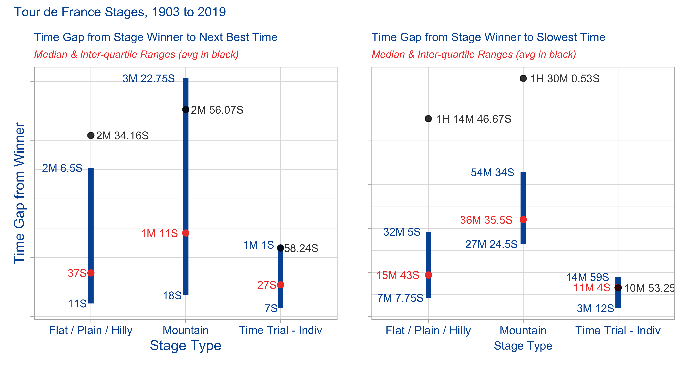
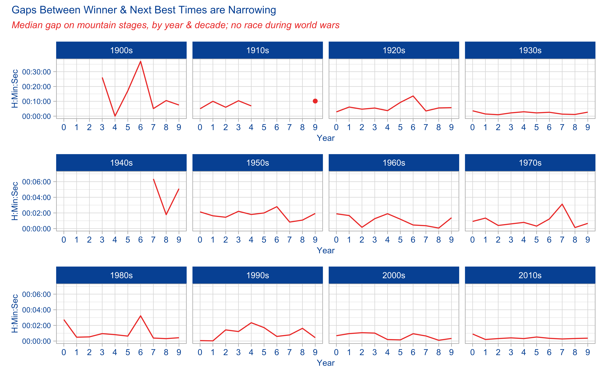
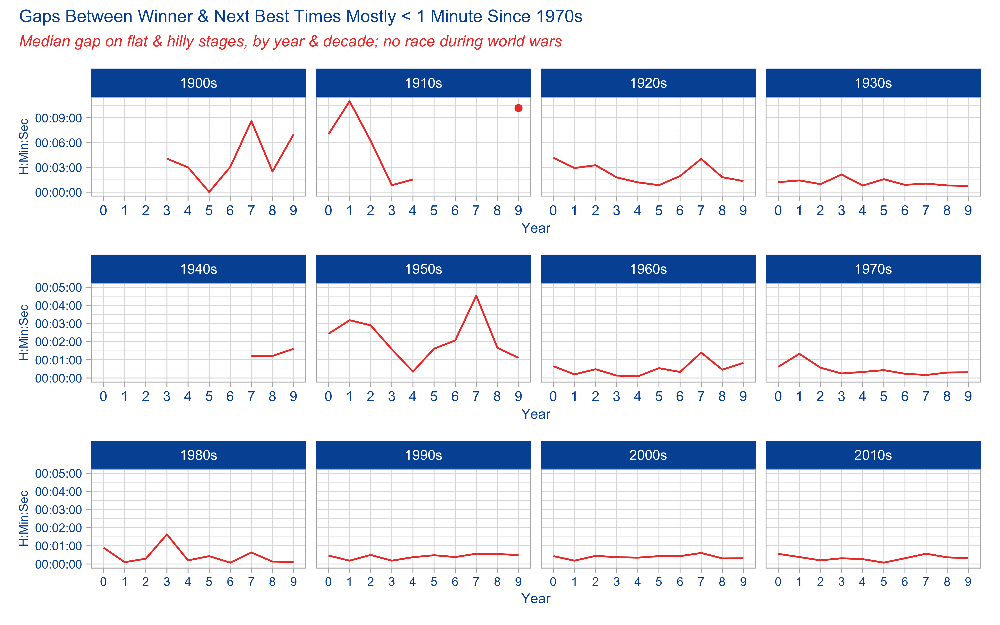
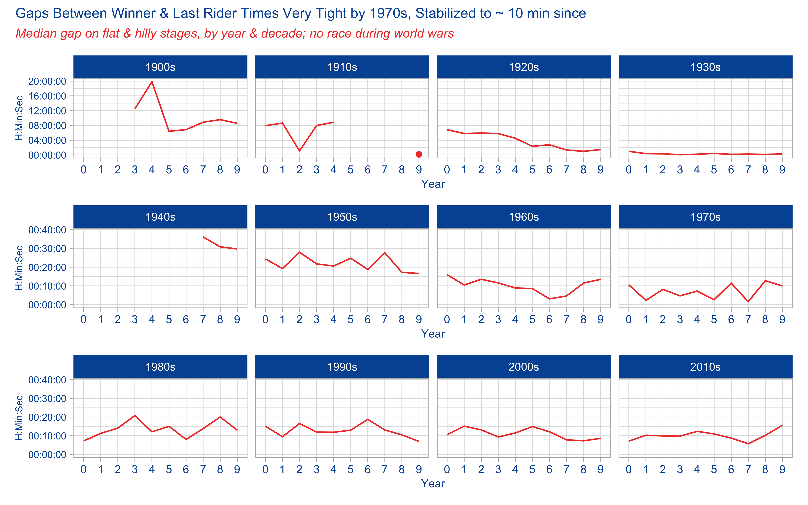

Stage 1 ended up being all about wrangling and cleaning the #TidyTuesday Tour de France data. When I first dug into the data I wasn’t sure what I wanted to visualize. It wasn’t until I spent some time living with the data, seeing what was there and looking at the #tidytuesday TdF submissions on Twitter so I didn’t repeat what was done that I decided I wanted to look at results by stage, specifically the gaps between the winners of each stage and the times recorded for the next-best group and the last rider(s) across the line. Charlie Gallagher took a similar approach at the data, using overall race results for the GC riders.
A quick but important aside - in the Tour, as in most (all?) UCI races, while each rider is accorded a place - 1, 2, 3, etc… - times are calculated by identifiable groups crossing the line. So let’s say you are 2nd to 15th in the 1st group (of 15 total riders) that crosses with barely any daylight between riders; you each get the same time as the winner. But only 1 rider wins the stage. In any stage, there could be only 2 or 3 identifiable time groups, or there could be many groups. Depends on the stage type and other factors - crashes, where in the race the stage took place, etc…
What this means for my project here is I needed to wrangle data so that I was able to identify two time groups apart from the winner; the next best group and the last group. Each group could have more than 1 rider. Download and clean the stage results data and you’ll see what I mean.
So let’s look at some code and charts. To mimimize code I’m going to skip the code that builds the charts…after the first one the basic code is the same, just some filters change. But you can find full code in my github repo for the project.
At the end of Stage 1 we had a number of data frames. I’m joining two for this analysis, one with stage winners (which has important stage characteristic data) and a set of all riders in every stage from 1903 to 2019. We’ll first load the pakcages we need…
# load packages
library(tidyverse) # to do tidyverse things
library(lubridate) # to do things with dates & times
library(tidylog) # to get a log of what's happening to the data
library(patchwork) # to stitch together plots
# create notin operator to help with cleaning & analysis
`%notin%` <- negate(`%in%`)Then join the sets. For the purposes of this post I’ll just load an RDS I created (it’s not uploaded to the repo, sorry, but you can recreate it with the code.
# tdf_stageall <- merge(tdf_stagedata, tdf_stagewin, by.x = c("race_year", "stage_results_id"),
# by.y = c("race_year", "stage_results_id"), all = T)
tdf_stageall <- readRDS("data/tdf_stageall.rds")This set has many columns that we’ll build off of to use in analysis going forward. To get the changes in gaps by stage types, we’ll build another set. Because we want to look both at changes in stage types and gaps between winners and the field, the trick here is to sort out for each stage in each race year who the winners are (easy), who has the slwest time (mostly easy) and who has the 2nd best record time.
That last item it tough because of the time & rank method I described above. The script below is commented to show why I did what I did. Much of the code comes from looking at the data and seeing errors, issues, etc. Not including that code here. Also, much of my ability to spot errors comes from knowledge about the race, how it’s timed, some history. Domain knowledge helps a lot when cleaning & analyzing data.
stage_gap <-
tdf_stageall %>%
arrange(race_year, stage_results_id, rank2) %>%
# delete 1995 stage 16 - neutralized due to death in stage 15, all times the same
mutate(out = ifelse((race_year == 1995 & stage_results_id == "stage-16"),
"drop", "keep")) %>%
filter(out != "drop") %>%
# delete missing times
filter(!is.na(time)) %>%
# remove non-finishers/starters, change outside time limit rank to numeric to keep in set
filter(rank %notin% c("DF", "DNF", "DNS", "DSQ", "NQ")) %>%
filter(!is.na(rank)) %>%
# OTLs are ejected from the race because they finished outside a time limit. But we need them in the set.
mutate(rank_clean = case_when(rank == "OTL" ~ "999",
TRUE ~ rank)) %>%
# sortable rank field
mutate(rank_n = as.integer(rank_clean)) %>%
# creates total time in minutes as numeric, round it to 2 digits
mutate(time_minutes = ifelse(!is.na(elapsed),
day(elapsed)*1440 + hour(elapsed)*60 + minute(elapsed) + second(elapsed)/60,
NA)) %>%
mutate(time_minutes = round(time_minutes, 2)) %>%
# create field for difference from winner
group_by(race_year, stage_results_id) %>%
arrange(race_year, stage_results_id, time_minutes, rank2) %>%
mutate(time_diff = time_minutes - min(time_minutes)) %>%
mutate(time_diff_secs = time_diff*60) %>%
mutate(time_diff = round(time_diff, 2)) %>%
mutate(time_diff_secs = round(time_diff_secs, 0)) %>%
mutate(time_diff_period = seconds_to_period(time_diff_secs)) %>%
mutate(rank_mins = rank(time_minutes, ties.method = "first")) %>%
# create rank field to use to select winner, next best, last
mutate(compare_grp = case_when(rank_n == 1 ~ "Winner",
(rank_n > 1 & time_diff_secs > 0 & rank_mins != max(rank_mins))
~ "Next best2",
rank_mins == max(rank_mins) ~ "Last",
TRUE ~ "Other")) %>%
ungroup() %>%
group_by(race_year, stage_results_id, compare_grp) %>%
arrange(race_year, stage_results_id, rank_mins) %>%
mutate(compare_grp = ifelse((compare_grp == "Next best2" & rank_mins == min(rank_mins)),
"Next best", compare_grp)) %>%
mutate(compare_grp = ifelse(compare_grp == "Next best2", "Other", compare_grp)) %>%
ungroup() %>%
mutate(compare_grp = factor(compare_grp, levels = c("Winner", "Next best", "Last", "Other"))) %>%
# create race decade field
mutate(race_decade = floor(race_year / 10) * 10) %>%
mutate(race_decade = as.character(paste0(race_decade, "s"))) %>%
# keep only winner, next, last
filter(compare_grp != "Other") %>%
select(race_year, race_decade, stage_results_id, stage_type, rider_firstlast, bib_number, Winner_Country,
rank, rank_clean, rank_n, time, elapsed, time_minutes, time_diff, time_diff_secs, time_diff_period,
rank_mins, compare_grp) Ok, finally, let’s see what this data looks like. First a chart to show averages and quartile ranges for the gaps by stage type. Create a data object with the values, then the plots. Faceting by stage type didn’t work because the y axis ranges were very different. So we’ll use patchwork to stitch them together in one plot. The medians are the red dots, interquartile ranges at either end of the line, and means are in black. I included both means & medians because the spread for some stage types was so great.
gapranges <- stage_gap %>%
filter(compare_grp != "Winner") %>%
filter(stage_type %notin% c("Other", "Time Trial - Team")) %>%
group_by(stage_type, compare_grp) %>%
summarise(num = n(),
lq = quantile(time_diff_secs, 0.25),
medgap = median(time_diff_secs),
uq = quantile(time_diff_secs, 0.75),
lq_tp = (seconds_to_period(quantile(time_diff_secs, 0.25))),
medgap_tp = (seconds_to_period(median(time_diff_secs))),
uq_tp = (seconds_to_period(quantile(time_diff_secs, 0.75))),
avggap = round(mean(time_diff_secs),2),
avggap_tp = round(seconds_to_period(mean(time_diff_secs)), 2))
gapplot1 <-
gapranges %>%
filter(compare_grp == "Next best") %>%
ggplot(aes(stage_type, medgap, color = avggap)) +
geom_linerange(aes(ymin = lq, ymax = uq), size = 2, color = "#0055A4") +
geom_point(size = 2, color = "#EF4135") +
geom_point(aes(y = avggap), size = 2, color = "black", alpha = .8) +
geom_text(aes(label = medgap_tp),
size = 3, color = "#EF4135", hjust = 1.2) +
geom_text(aes(y = uq, label = uq_tp),
size = 3, color = "#0055A4", hjust = 1.2) +
geom_text(aes(y = lq, label = lq_tp),
size = 3, color = "#0055A4", hjust = 1.2) +
geom_text(aes(label = avggap_tp, y = avggap_tp),
size = 3, color = "black", alpha = .8, hjust = -.1) +
labs(title = "Time Gap from Stage Winner to Next Best Time",
subtitle = "Median & Inter-quartile Ranges (avg in black)",
y = "Time Gap from Winner", x = "Stage Type") +
theme_light() +
theme(plot.title = element_text(color = "#0055A4", size = 9),
plot.subtitle = element_text(face = "italic", color = "#EF4135",
size = 8),
axis.title.x = element_text(color = "#0055A4"),
axis.title.y = element_text(color = "#0055A4"),
axis.text.x = element_text(color = "#0055A4"),
axis.text.y=element_blank())
gapplot2 <-
gapranges %>%
filter(compare_grp == "Last") %>%
ggplot(aes(stage_type, medgap, color = avggap)) +
geom_linerange(aes(ymin = lq, ymax = uq), size = 2, color = "#0055A4") +
geom_point(size = 2, color = "#EF4135") +
geom_point(aes(y = avggap), size = 2, color = "black", alpha = .8) +
geom_text(aes(label = medgap_tp),
size = 3, color = "#EF4135", hjust = 1.2) +
geom_text(aes(y = uq, label = uq_tp),
size = 3, color = "#0055A4", hjust = 1.2) +
geom_text(aes(y = lq, label = lq_tp),
size = 3, color = "#0055A4", hjust = 1.1) +
geom_text(aes(label = avggap_tp, y = avggap_tp),
size = 3, color = "black", alpha = .8, hjust = -.1) +
labs(title = "Time Gap from Stage Winner to Slowest Time",
subtitle = "Median & Inter-quartile Ranges (avg in black)",
y = "", x = "Stage Type") +
theme_light() +
theme(plot.title = element_text(color = "#0055A4", size = 9),
plot.subtitle = element_text(face = "italic", color = "#EF4135",
size = 8),
axis.title.x = element_text(color = "#0055A4", size = 9),
axis.text.x = element_text(color = "#0055A4", size = 9),
axis.text.y=element_blank())
gapplot1 + gapplot2 +
plot_annotation(title = "Tour de France Stages, 1903 to 2019",
theme = theme(plot.title =
element_text(color = "#0055A4", size = 10)))
What do these charts tell us? Well unsurprisingly mountain stages tend to have longer gaps between winners and the rest of the field than do flat/plain/hilly stages. Time trials are usually on flat or hilly stages, so they behave more like all other flat/plain/hilly stages. Even looking at the median to smooth for outliers, half of the last men in on mountain stages came in under 36 minutes, half over 36 minutes. The last 25% of mountain-stage riders came in an hour or more after the winner.
How has this changes over time? Well let’s facet out by degree decade.
First thing that needs doing is to build a dataframe for analysis - it will have medians my race year and stage type. But for the chart we want to have a decade field. Turns out this was a bit complicated in order to get the chart I wanted. You can see in the code comments why I did what I did.
gaprangesyrdec <-
stage_gap %>%
filter(compare_grp != "Winner") %>%
filter(stage_type %notin% c("Other", "Time Trial - Team")) %>%
group_by(stage_type, compare_grp, race_year) %>%
summarise(num = n(),
lq = quantile(time_diff_secs, 0.25),
medgap = median(time_diff_secs),
uq = quantile(time_diff_secs, 0.75),
lq_tp = (seconds_to_period(quantile(time_diff_secs, 0.25))),
medgap_tp = (seconds_to_period(median(time_diff_secs))),
uq_tp = (seconds_to_period(quantile(time_diff_secs, 0.75))),
avggap = round(mean(time_diff_secs),2),
avggap_tp = round(seconds_to_period(mean(time_diff_secs)), 2)) %>%
ungroup() %>%
# need to hard code in rows so x axis & faceting works in by decade charts
add_row(stage_type = "Flat / Plain / Hilly", compare_grp = "Next best",
race_year = 1915, .before = 13) %>%
add_row(stage_type = "Flat / Plain / Hilly", compare_grp = "Next best",
race_year = 1916, .before = 14) %>%
add_row(stage_type = "Flat / Plain / Hilly", compare_grp = "Next best",
race_year = 1917, .before = 15) %>%
add_row(stage_type = "Flat / Plain / Hilly", compare_grp = "Next best",
race_year = 1918, .before = 16) %>%
add_row(stage_type = "Flat / Plain / Hilly", compare_grp = "Last",
race_year = 1915, .before = 123) %>%
add_row(stage_type = "Flat / Plain / Hilly", compare_grp = "Last",
race_year = 1916, .before = 124) %>%
add_row(stage_type = "Flat / Plain / Hilly", compare_grp = "Last",
race_year = 1917, .before = 125) %>%
add_row(stage_type = "Flat / Plain / Hilly", compare_grp = "Last",
race_year = 1918, .before = 126) %>%
add_row(stage_type = "Mountain", compare_grp = "Next best",
race_year = 1915, .before = 233) %>%
add_row(stage_type = "Mountain", compare_grp = "Next best",
race_year = 1916, .before = 234) %>%
add_row(stage_type = "Mountain", compare_grp = "Next best",
race_year = 1917, .before = 235) %>%
add_row(stage_type = "Mountain", compare_grp = "Next best",
race_year = 1918, .before = 236) %>%
add_row(stage_type = "Mountain", compare_grp = "Last",
race_year = 1915, .before = 343) %>%
add_row(stage_type = "Mountain", compare_grp = "Last",
race_year = 1916, .before = 344) %>%
add_row(stage_type = "Mountain", compare_grp = "Last",
race_year = 1917, .before = 345) %>%
add_row(stage_type = "Mountain", compare_grp = "Last",
race_year = 1918, .before = 346) %>%
# need field for x axis when faciting by decade
mutate(year_n = str_sub(race_year,4,4)) %>%
# create race decade field
mutate(race_decade = floor(race_year / 10) * 10) %>%
mutate(race_decade = as.character(paste0(race_decade, "s"))) %>%
# mutate(race_decade = ifelse(race_year %in%))
arrange(stage_type, compare_grp, race_year) %>%
select(stage_type, compare_grp, race_year, year_n, race_decade, everything())Now that we have a dataframe to work from, let’s make a chart. But to do that we have to make a few charts and then put them together with the patchwork package.
First up is changes in the mountain stages and the median gaps between winner and next best recorded time. I grouped into three decade sets. Note that because of changes in the gaps over time, the y axes are a bit different in the early decades of the race. Also note at how I was able to get hours:seconds:minutes to show up on the y axis. The x axis digits are that way because race year would repeat in each facet, so I had to create a proxy year.
# mountain winner to next best
plot_dec_mtnb1 <-
gaprangesyrdec %>%
filter(compare_grp == "Next best") %>%
filter(stage_type == "Mountain") %>%
filter(race_decade %in% c("1900s", "1910s", "1920s", "1930s")) %>%
# filter(race_decade %in% c("1940s", "1950s", "1960s", "1970s")) %>%
ggplot(aes(year_n, medgap)) +
geom_line(group = 1, color = "#EF4135") +
geom_point(data = subset(gaprangesyrdec,
(race_year == 1919 & stage_type == "Mountain" &
compare_grp == "Next best" & year_n == "9")),
aes(x = year_n, y = medgap), color = "#EF4135") +
scale_y_time(labels = waiver()) +
labs(x = "Year", y = "H:Min:Sec") +
facet_grid( ~ race_decade) +
theme_light() +
theme(axis.title.x = element_text(color = "#0055A4", size = 8),
axis.title.y = element_text(color = "#0055A4" , size = 8),
axis.text.x = element_text(color = "#0055A4", size = 8),
axis.text.y = element_text(color = "#0055A4", size = 7),
strip.background = element_rect(fill = "#0055A4"), strip.text.x = element_text(size = 8))
plot_dec_mtnb2 <-
gaprangesyrdec %>%
filter(compare_grp == "Next best") %>%
filter(stage_type == "Mountain") %>%
filter(race_decade %in% c("1940s", "1950s", "1960s", "1970s")) %>%
ggplot(aes(year_n, medgap)) +
geom_line(group = 1, color = "#EF4135") +
scale_y_time(limits = c(0, 420), labels = waiver()) +
labs(x = "Year", y = "H:Min:Sec") +
facet_grid( ~ race_decade) +
theme_light() +
theme(axis.title.x = element_text(color = "#0055A4", size = 8),
axis.title.y = element_text(color = "#0055A4" , size = 8),
axis.text.x = element_text(color = "#0055A4", size = 8),
axis.text.y = element_text(color = "#0055A4", size = 7),
strip.background = element_rect(fill = "#0055A4"), strip.text.x = element_text(size = 8))
plot_dec_mtnb3 <-
gaprangesyrdec %>%
filter(compare_grp == "Next best") %>%
filter(stage_type == "Mountain") %>%
filter(race_decade %in% c("1980s", "1990s", "2000s", "2010s")) %>%
ggplot(aes(year_n, medgap)) +
geom_line(group = 1, color = "#EF4135") +
scale_y_time(limits = c(0, 420), labels = waiver()) +
labs(x = "Year", y = "H:Min:Sec") +
facet_grid( ~ race_decade) +
theme_light() +
theme(axis.title.x = element_text(color = "#0055A4", size = 8),
axis.title.y = element_text(color = "#0055A4" , size = 8),
axis.text.x = element_text(color = "#0055A4", size = 8),
axis.text.y = element_text(color = "#0055A4", size = 7),
strip.background = element_rect(fill = "#0055A4"), strip.text.x = element_text(size = 8))
plot_dec_mtnb1 / plot_dec_mtnb2 / plot_dec_mtnb3 +
plot_annotation(title = "Gaps Between Winner & Next Best Times are Narrowing",
subtitle = "Median gap on mountain stages, by year & decade; no race during world wars",
theme =
theme(plot.title = element_text(color = "#0055A4", size = 10),
plot.subtitle = element_text(color = "#EF4135",
face = "italic", size = 9)))
What does this chart tell us? As you look at it, keep in mind the y axis is different in the 1900s - 1930s chart because in the early years of the race the gaps were much wider.
Most obviously, and not surprisingly, the gaps between winner and next best time shrank as the race professionalized and sports science got better. There are of course outliers here and there in the last few decades, but the course changes year-to-year, and some years the race organizers have made some years more difficult than other in the mountains.
We also see the effect of war. The two world wars not only interrupted the race in those years, but especially in the years immediately after WWII the gaps were larger than in the late 1930s. We can imagine what the war did to the pool of riders. The sport needed time to recover, for riders to train and get back to full fitness.
Ok, now let’s look at the changes in the mountaints from the winners to the time for the last rider(s). Because the code is mostly the same for this chart, I’ll set the code chunk echo to FALSE. The only change is filter(compare_grp == "Last")
What do we see here? Well first, notice that the gaps in the 1900s to 1930s were huge, especially before the 1930s. By the 1930s the gaps was usually around 30-40 minutes, similar to post-WWII years. But in the early years of the race, the last man in sometimes wouldn’t arrive until 10+ hours after the winner!
But since then the gaps are mostly around 30+ minutes. And again, I adjusted to include racers who finish outside of the time-stage cut off, and are thus eliminated from the race overall.
Ok, last two charts in this series…this time we’ll look at the flat & hilly stages. Again, I won’t show the code. Only changes are to the filters: filter(compare_grp == "Next best") or filter(compare_grp == "Last") and filter(stage_type == "Flat / Plain / Hilly"). If you want to see the full code, check out tt_2020-04-07_letour.R in my github repo for tidy tuesday projects.

Perhaps the most surprising thing in the Flat/Hilly stage gaps between winners & next best is that the gaps were similar to mountain stages. But then from watching the race all these years I remember that the climbers finish in groups fairly near to each other, even if the mountain stages are so hard.
No surprise of course that for many decades now the gaps have been around or under a minute. After the bunch sprints, the next group of riders, those not contesting the win, are right behind that pack.

The gap from winner to last was much less than winner-to-last in mountains, which isn’t a surprise. The sprinters tend to suffer in the Alps, Pyrenees and other mountain stages. As long as they come in under the time threshold, they are likelyto be well behind on the day. But on flat stages, the only thing that keeps a rider more than a few minutes back is a spill, flat tire, or just having a bad day.
Now it’s worth noting that I did not normalize for stage distance or elevation gain (for mountain stages) in terms of comparing year to year. I went with the assumption that since I was grouping multiple stages into a year, that even over time this would normalize itself. If this were a more serious analysis I’d do it.
Another extention of this analysis would be a model to predict time gaps. Then I’d include stage distance & gain, rider height/weight, and other factors.
Some shout-outs are in order. First of course to the #tidytuesday crew. For the data here:
* Alastair Rushworth and his tdf package
* Thomas Camminady and his Le Tour dataset
This post was last updated on 2020-12-04